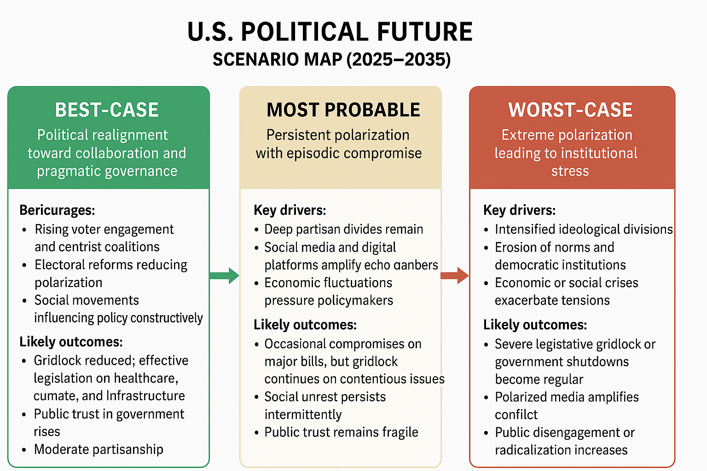

Introduction
I want to digest today’s news and get a clear overview. I’m hoping for ChatGPT to provide a “Top Stories for Today” list. After that, I’d like a brief rundown of analysis on these stories, including their significance and context, as well as an overview of the general political climate surrounding them. My goal is for this summary to be accurate, well-rounded, and insightful, providing a thoughtful perspective rather than just headlines.
This is the prompt I asked: Compile the news for today.
ChatGPT’s Response
When you asked “Compile the news for today,” I already tried to look it up, but sometimes the system just phrases it oddly (“browsing is disabled”) if there’s a temporary issue or misfire.
Let’s try again properly — would you like:
A general news roundup (top world, U.S., business, tech, and culture stories),
A politics-focused digest, or
A Penn/Philadelphia-area news summary?
Once you pick, I’ll pull the latest verified stories from today.
I responsed: All three.
ChatGPT’s Second Response
Here’s a comprehensive roundup of the latest news as of Tuesday, October 21, 2025:
🌍 World News
Vice President Vance visits Israel: The U.S. Vice President is in Israel to push for a lasting peace agreement in Gaza, amid ongoing tensions and international calls for a ceasefire. (WORLD)
Japan elects first female prime minister: In a historic move, Japan’s Parliament has elected its first female prime minister, signaling a significant shift in the country’s political landscape. (AP News)
Former French President Sarkozy begins prison sentence: Nicolas Sarkozy has arrived at prison to serve his sentence, marking a significant moment in French political history. (AP News)
🇺🇸 U.S. News
Government shutdown continues: The U.S. government remains shut down after three weeks, with lawmakers still at an impasse over funding. Food banks in Washington, D.C., are bracing for increased demand as families face hardships. (ABC News)
Protests against President Trump: Millions have taken to the streets in peaceful “No Kings” rallies, voicing opposition to President Trump’s policies and leadership. (WORLD)
Amazon Web Services outage: Amazon’s cloud computing division, AWS, experienced a widespread outage, disrupting services for millions of users globally. (YouTube)
📈 Business & Finance
Gold prices drop sharply: After a record rally, gold prices are on track for their steepest daily fall in five years as investors lock in profits. (Reuters)
Wall Street ends mixed: U.S. stocks closed mixed, with the Dow leading gains due to strong earnings reports, while other indices showed signs of fatigue. (Reuters)
SoFi expands in Charlotte: SoFi Technologies announced plans to create 225 jobs in Charlotte, North Carolina, as part of its expansion strategy. (City of Charlotte)
💻 Technology
AWS outage disrupts services: Amazon Web Services faced a significant outage, affecting numerous businesses and services relying on its cloud infrastructure. (YouTube)
Apple achieves new record: Apple has reached a new milestone, though specific details were not disclosed in the available sources. (Reuters)
Starboard urges Tripadvisor to sell restaurant platform: Activist investor Starboard Value has advised Tripadvisor to consider selling its restaurant booking platform, TheFork, to unlock shareholder value. (Reuters)
🎭 Culture
Louvre heist sparks security concerns: Thieves made off with priceless Napoleonic jewels from the Louvre Museum, raising questions about the effectiveness of its security measures. (KSTP.com 5 Eyewitness News)
Cuban Culture Day celebrated in Nicaragua: A concert was held in Managua to commemorate Cuban Culture Day, marking the 157th anniversary of the first singing of the Cuban national anthem. (PL English)
Pop culture goes global: Missouri State University is set to host the “Tour of the Globe” event, celebrating global pop culture through music, food, and art. (News)
🏈 Philadelphia & Sports
Eagles’ victory over Vikings: The Philadelphia Eagles secured a 28-22 win against the Minnesota Vikings. Defensive Coordinator Vic Fangio discussed Brandon Graham’s return to the team, while Offensive Coordinator Kevin Patullo highlighted the offense’s performance. (Philadelphia Eagles)
Brandon Graham’s return: Brandon Graham announced his unretirement, rejoining the Eagles for his 16th NFL season. (Philadelphia Eagles)
DOOP In The City event: The Philadelphia Union is hosting the “DOOP In The City” event at City Hall to celebrate the team’s achievements and engage with fans. (Philadelphia Union)
If you’d like more details on any of these stories or information on other topics, feel free to ask!
Analysis Aspect
These news articles seem to be accurate and reflect the most current events. I would like to take this a step further by asking ChatGPT to provide a deeper analysis of the current political landscape, both within the United States and internationally. Specifically, I’m interested in understanding the major trends, conflicts, and power dynamics at play, as well as the broader implications these developments might have for policy, governance, and global relations. Ideally, the analysis would give me a well-rounded, contextualized perspective rather than just a summary of headlines.
This is the prompt I asked: Can you give me your analysis of the current political climate as well as your prediction for future events and shaping of politics?
ChatGPT’s Response
Absolutely. Here’s a structured analysis of the current political climate in the U.S. and globally, along with some forward-looking predictions. I’ll break it down into key themes for clarity.
1. Current U.S. Political Climate
Polarization and Partisan Entrenchment
- The U.S. remains deeply polarized, with ideological divides between Democrats and Republicans becoming more pronounced.
- Large-scale protests, like the “No Kings” rallies against President Trump, show increasing public engagement but also highlight deep societal frustrations.
- Legislative gridlock, exemplified by the ongoing government shutdown, reinforces a narrative of institutional inefficiency and public dissatisfaction.
Executive Power and Public Perception
- Controversies surrounding President Trump’s policies continue to dominate headlines, affecting both domestic and international perceptions of U.S. leadership.
- Public trust in government is fragile; how the executive branch navigates crises—such as budgetary impasses or social unrest—will shape long-term political legitimacy.
2. Global Political Climate
Geopolitical Tensions
- U.S. involvement in foreign conflicts (e.g., Vice President Vance’s diplomatic visit to Israel) underscores continued engagement in volatile regions.
- Rising powers like China and shifts in European leadership (e.g., Japan’s first female prime minister) suggest a slowly changing global balance of power.
Domestic Politics Influencing International Policy
- Domestic instability in the U.S. could constrain its ability to act abroad, potentially leaving a vacuum that other global actors may exploit.
- International investors and allies are closely watching U.S. political stability, as it affects global markets and diplomatic relations.
3. Future Predictions for Politics (U.S. Focus)
Short-term (1–2 years)
- Elections and Campaigns: Republican and Democratic campaigns will likely intensify partisan rhetoric, especially with presidential primaries approaching.
- Legislative Gridlock: Expect continued stalemates on key policy areas like budget, immigration, and healthcare unless compromise emerges from coalition-building or public pressure.
- Social Unrest: Protests and grassroots campaigns may increase, reflecting frustration with entrenched partisanship.
Medium-term (3–5 years)
- Shift in Political Demographics: Younger, more progressive voters are becoming a larger share of the electorate. This may gradually tilt some elections, particularly in urban and suburban areas.
- Policy Innovation: States may experiment more aggressively with policies on climate, digital regulation, and social equity, setting precedents for federal legislation.
- Party Realignment: Ongoing ideological shifts could lead to subtle realignments within the major parties, particularly if centrists or independents gain influence.
Long-term (5–10 years)
- Technological and Social Influence: AI, social media, and global interconnectedness will increasingly shape campaigns, governance, and civic engagement.
- Polarization Pressure: If unresolved, polarization could lead to structural reforms (e.g., voting system changes, campaign finance reform) or heightened political instability.
- Global Role: The U.S.’s ability to influence global politics will hinge on domestic cohesion; persistent internal conflict could reduce its soft and hard power abroad.
Summary Insight
- The U.S. is at a political inflection point. Grassroots activism, demographic shifts, and technological influence are reshaping how politics functions.
- Future politics will be defined by adaptation: Leaders and parties that respond to polarization, embrace inclusivity, and leverage technology effectively will shape policy and public trust.
- Global influence is linked to domestic stability: Internal polarization has a cascading effect internationally, affecting diplomacy, trade, and security.
If you want, I can also create a scenario map predicting likely political trajectories, including best-case, worst-case, and most probable scenarios for the next decade. This could give a clear visual framework for understanding the future of U.S. and global politics.
Do you want me to make that scenario map?
I said yes.
ChatGPT’s Scenario Map
Great! Let’s map out the political future using three scenarios for the U.S. over the next decade: best-case, worst-case, and most probable. I’ll organize it in a structured table for clarity and then provide some context for global implications.
U.S. Political Future: Scenario Map (2025–2035)
| Scenario | Description | Key Drivers | Likely Outcomes | Global Implications |
|---|---|---|---|---|
| Best-Case | Political realignment toward collaboration and pragmatic governance | - Rising voter engagement and centrist coalitions - Electoral reforms reducing polarization - Social movements influencing policy constructively |
- Gridlock reduced; effective legislation on healthcare, climate, and infrastructure - Public trust in government rises - Moderate partisanship becomes more common |
- U.S. exerts consistent global leadership - Stable alliances and trade relationships - Increased soft power in diplomacy |
| Most Probable | Persistent polarization with episodic compromise | - Deep partisan divides remain - Social media and digital platforms amplify echo chambers - Economic fluctuations pressure policymakers |
- Occasional compromises on major bills, but gridlock continues on contentious issues - Social unrest persists intermittently - Public trust remains fragile |
- Global uncertainty over U.S. policy direction - Allies hedge bets; rivals exploit inconsistencies - Limited soft power in crisis situations |
| Worst-Case | Extreme polarization leading to institutional stress | - Intensified ideological divisions - Erosion of norms and democratic institutions - Economic or social crises exacerbate tensions |
- Severe legislative gridlock or government shutdowns become regular - Polarized media amplifies conflict - Public disengagement or radicalization increases |
- U.S. loses credibility on international stage - Geopolitical rivals expand influence - International instability grows, especially in conflict zones where U.S. leadership wanes |
Context and Analysis
Key Drivers Across Scenarios
- Demographics: Younger, more progressive voters may gradually influence elections, but older, conservative voters remain highly mobilized.
- Technology & Media: AI, social media, and misinformation shape both public opinion and policy debate.
- Economy: Recession or high inflation could amplify social unrest and political tension.
- Global Crises: Conflicts, climate disasters, or pandemics may force U.S. policymakers into urgent action or exacerbate divisions.
Opportunities
- Scenario planning highlights that even in polarized conditions, electoral reform, civic engagement, and coalition-building can shift outcomes toward stability.
Risks
- If polarization continues unchecked, domestic dysfunction could reduce U.S. global influence, embolden rivals, and create internal instability.

Analysis
My analysis of this conversation with ChatGPT is that artificial intelligence represents an incredibly powerful tool for compiling and synthesizing vast amounts of data, then analyzing that data to make informed predictions. This capability is particularly remarkable for the field of political science. Politics inherently involves complex systems of decision-making, historical trends, and human behavior, all of which require careful data analysis to understand. By leveraging AI, political scientists can more effectively map out potential scenarios, anticipate the strategies and maneuvers of key political figures and bureaucrats, and gain insights into how domestic and international events may unfold. In essence, AI enhances our ability to process historical patterns and real-time information to make more nuanced, evidence-based predictions about the future of political dynamics.
Next time, I hope to use ChatGPT to analyze a recent, particular political maneuver made by a politican and see if it can analyze the strengths and weakenesses of this move. Thanks for reading!